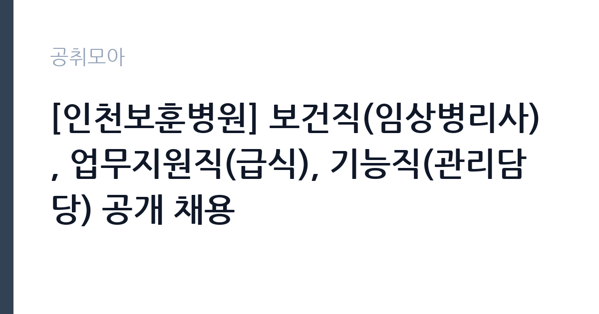

[공공기관] [인천보훈병원] 보건직(임상병리사), 업무지원직(급식), 기능직(관리담당) 공개 채용
한국보훈복지의료공단 · 인천 · 마감 2026-11-10 (D-14) · 출처 잡알리오

한눈에 보는 모집 조건
| 기관 | 한국보훈복지의료공단 |
|---|---|
| 공고명 | [인천보훈병원] 보건직(임상병리사), 업무지원직(급식), 기능직(관리담당) 공개 채용 |
| 고용형태 | 정규직 |
| 근무지 | 인천 |
| 게시일 | 2026-10-27 |
| 마감일 | 2026-11-10 (D-14) |
지원자격, 이렇게 읽으세요
- 공공기관 채용공시
- 세부 조건은 원문 공고문 확인
정규직 채용은 기간의 정함이 없는 근로계약을 전제로 합니다. 수습 기간을 두고 평가한 뒤 정규직으로 확정하는 절차가 일반적이며 기관의 인사 규정과 임금 체계를 적용받습니다. 이번 공고는 한국보훈복지의료공단에서 직접 진행하는 자체 전형으로, 응시자격과 제출서류는 공고문에 항목별로 제시됩니다. 조리 직무는 조리사 자격증 소지자를 요구하거나 우대하는 경우가 많습니다. 최근에는 위생교육 이수와 건강진단 결과를 제출해야 하므로 채용 전 건강 상태를 준비해야 합니다. 대체인력이나 단기 계약으로 채용되면 근무 기간이 명시되며, 기존 직원의 휴직이나 출산휴가 기간과 맞물리는 경우가 흔합니다. 급식 인원과 조리 인력이 정해져 있어 혼자서 많은 양을 처리해야 할 수 있습니다. 서류는 접수 마감 이후 보완이 되지 않으므로 자격 요건과 증빙 서류를 마감 전에 모두 갖춰야 합니다. 공고문에 명시된 우대 사항은 해당 여부를 확인해 증빙을 첨부해야 가점이 반영됩니다. 자격 취득 예정자는 채용 공고의 예정자 허용 조항을 먼저 확인해야 합니다. 조항이 없으면 지원 자체가 반려될 수 있습니다. 이 공고 원문에 적힌 응시 조건 문구는 '(필수) 공고시작일 기준 임상병리사 면허증 소지자' / '(우대) 병원급 이상의 의료기관에서 치매 검사 업무(치매 관련 검사, 신경기능검사) 경력자(1년 이상)' / '(우대) 공고시작일 기준 조리 관련 자격·면허 소지자'입니다. 문구를 그대로 읽고 본인 해당 여부를 하나씩 표시해 두면 서류 단계에서 탈락하는 일을 줄일 수 있습니다.
이 공고의 포인트
이 공고의 첫 번째 포인트는 고용 형태입니다. 수습 기간 평가를 통과하면 기간의 정함이 없는 신분이 되어 고용이 안정됩니다. 두 번째는 업무 범위가 명확하다는 점입니다. 조리·급식 직무로 채용되므로 배치 이후 담당 업무가 크게 흔들리지 않습니다. 세 번째는 근무지입니다. 인천 지역 근무로 접근성은 좋지만 그만큼 지원자가 몰리는 지역이므로 경쟁률을 넉넉히 잡아야 합니다. 근무 조건이 공고문에 구체적으로 적혀 있어 지원 전에 판단할 정보가 충분합니다. 같은 직무로 함께 올라온 공고 가운데 접수 마감이 가장 늦은 편이라 준비 시간을 상대적으로 확보할 수 있습니다. 선발 인원은 공고문에 명시되어 있으니 모집분야 항목을 함께 확인하십시오.
전형은 어떻게 진행되나
서류전형과 면접전형 외에 직무수행능력 평가가 붙는 경우가 있습니다. 평가 방식은 공고문에 구체적으로 적혀 있으므로 어떤 항목에 배점이 높은지 먼저 파악하십시오. 면접에서는 지원 동기보다 실제 업무 경험에 대한 질문이 많고, 답변의 구체성이 평가를 가릅니다. 전형 일정은 서류 마감 이후 빠르게 진행되므로 연락 가능한 번호를 정확히 기재하고 문자와 메일을 수시로 확인해야 합니다. 최종 단계에서는 결격사유 조회와 신체검사가 진행됩니다. 동점자 처리 기준이 공고문에 명시되어 있으니 배점 항목을 미리 확인해 두십시오.
원문에서 확인한 전형 방식
○ 보건직 5급(임상병리사, 계약직) 1명 · (필수) 공고시작일 기준 임상병리사 면허증 소지자 · (우대) 병원급 이상의 의료기관에서 치매 검사 업무(치매 관련 검사, 신경기능검사) 경력자(1년 이상) ○ 업무지원직(급식, 정규직-무기계약직) 1명 · (필수) 교대 근무 및 주말·공휴일 근무 가능자 · (우대) 공고시작일 기준 조리 관련 자격·면허 소지자 · (우대) 단체/병원 급식 경험자 ○ 기능직(관리담당, 휴직대체 계약직) 1명 · (우대) 컴퓨터활용능력 2급 이상, 사무자동화산업기사, 워드프로세서 자격증 소지자 · (우대) 관련 업무 1년 이상 경력자 ○ 공통 사항 · (필수) 공단 인사규정 제18조(결격사유 및 임용취소)에 해당하지 않는 자 · (필수) 공단 인사규정 제44조 및 업무지원직 인사관리 시행세칙 제13조에 따른 정년(60세)을 초과하지 않는 자 · (필수) 직무 외 영리를 목적으로 하는 업무를 겸하여 종사할 수 없음 · (필수) 남성의 경우 병역을 필하였거나, 면제자에 한함
이런 분께 추천해요
- 조리사 자격 또는 급식 조리 경력이 있는 분
- 위생 수칙을 습관적으로 지키는 분
- 이른 출근과 정해진 배식 시간을 지킬 수 있는 분
지원 전 체크리스트
- 응시자격 요건과 경력 기준을 충족하는가 — 경력은 증명서로 입증해야 합니다
- 수습 기간과 정규직 전환 조건을 확인했는가
- 제출서류 목록을 모두 준비했는가 — 누락 시 서류 단계에서 탈락합니다
- 접수 마감 2026-11-10 이전에 접수 방식을 확인해 제출했는가
모집 일정과 제출 타이밍
공고 게시일은 2026-10-27, 접수 마감은 2026-11-10입니다. 준비 기간은 약 14일로 서류 준비와 자격 증빙을 함께 처리하기에는 넉넉하지 않은 편입니다. 첫 이틀 안에 공고문과 첨부 서식을 내려받아 요건을 확인하고 남은 기간에 증빙 서류를 발급받는 일정이 현실적입니다. 면접은 서류 합격자 발표 후 짧은 간격으로 진행되는 경우가 많으므로 서류 제출과 동시에 면접 준비를 시작하는 편이 안전합니다. 마감일에는 접수 시스템이 몰리므로 하루 전까지 제출을 마치는 것이 좋습니다. 임용 예정일이 빠르게 잡히는 공고이므로 현재 일정과 겹치지 않는지 미리 확인하십시오. 인천 근무지는 지역 내 이동 거리가 길어 출퇴근 시간이 생각보다 많이 걸릴 수 있습니다. 마감까지 2주 안팎이 있어 준비할 시간은 있지만 미루면 촉박해집니다. 선발 인원은 공고문의 모집분야 항목에 직종별로 제시되어 있습니다.
직무 이해하기: 공공기관
공공기관은 도로와 수자원, 농지, 부동산 시장 관리 같은 공적 기능을 수행합니다. 현장 사업소는 도로와 시설 유지 관리, 조경과 환경 관리 업무를 직접 수행하며 계절 사업에 따라 기간제 인력을 채용합니다. 조리 업무는 급식 인원에 맞춰 식단을 준비하고 배식하는 일입니다. 재료 검수와 손질, 조리, 배식, 세척, 잔반 처리까지 하루 주기가 정해져 있습니다. 위생 관리 기준에 따라 냉장고 온도와 조리 기구 소독 상태를 기록하고 식중독 예방 수칙을 지켜야 합니다. 학교나 복지시설, 부대 급식소처럼 대상이 정해진 곳에서는 알레르기 유발 식품 표시와 식단표 관리도 업무에 포함됩니다. 아침과 점심 시간에 맞춰 이른 출근이 필요한 경우가 많습니다. 업무는 혼자 처리하기보다 부서 단위로 나눠 진행되므로 담당 구역과 협업 범위를 입사 초에 확인하는 것이 중요합니다. 업무 강도와 근무 시간대는 부서 배치에 따라 달라지므로 면접에서 확인하는 것이 가장 정확합니다.
자기소개서 작성 팁
조리 지원서는 위생과 안전에 대한 습관을 증명하는 데 집중하십시오. 이전 근무지에서 지킨 위생 수칙, 대량 조리 경험, 식단 관리 경험을 구체적으로 쓰십시오. 인원이 적은 급식소에서는 혼자 여러 업무를 처리해야 하므로 동시에 여러 작업을 진행한 경험이 소재가 됩니다. 장기 근무 의사와 이른 출근 가능 여부도 함께 밝히십시오. 직무 경험이 많지 않다면 경험의 양보다 과정을 구체적으로 쓰는 편이 낫습니다. 어떤 상황에서 무엇을 판단했고 어떤 결과가 나왔는지 순서대로 서술하면 신뢰가 생깁니다. 지원 동기와 기여 방안은 한 문단씩 짧게 유지하고, 가장 자신 있는 경험에 분량을 몰아주십시오. 마지막 문장은 포부보다 구체적인 실행 계획으로 끝내는 것이 좋습니다.
면접 준비 포인트
면접에서는 위생 관리와 팀 협업 태도를 확인합니다. 조리 중 위생 사고를 예방하기 위해 어떤 절차를 지키는지, 식단이 갑자기 바뀌면 어떻게 대응하는지, 동료와 역할이 겹칠 때 어떻게 조율하는지를 묻습니다. 조리 자격과 경력은 서류에서 확인되므로 면접에서는 실제 작업 속도와 안전 관리 방식을 보여주는 것이 좋습니다. 답변은 상황, 판단, 조치의 순서로 정리하면 전달이 분명해집니다. 모르는 질문에는 모른다고 밝히고 확인 방법을 제시하는 편이 억지 답변보다 낫습니다. 마지막에는 근무 의사와 함께 2026-11-10 이후 일정에 언제든 응할 수 있다는 점을 전달하십시오. 본인 경험을 말할 때는 기간, 역할, 결과를 순서대로 정리해 두면 질문이 바뀌어도 활용할 수 있습니다.
급여·근무조건 읽는 법
알리오(공공기관 경영정보 공개시스템) 2025년 결산 경영공시 기준으로 한국보훈복지의료공단 일반정규직 1인당 평균보수액은 7,172만원, 공시된 신입사원 초임은 4,170만원입니다. 평균보수액은 기본급에 고정수당·실적수당·성과상여금·급여성 복리후생비를 모두 합산한 값이라 월 기본급만 보고 판단하면 실제와 크게 어긋납니다. 정규직 신입의 경우 공시된 신입사원 초임이 출발점이 되고, 이후 호봉과 성과급에 따라 평균보수에 접근합니다. 조리 직무의 보수는 기관의 직종별 임금표를 따르며, 기본급에 정액급식비와 명절휴가비, 초과근무수당이 더해집니다. 조리사 자격이나 경력에 따라 호봉이 달라지는 경우가 있으므로 경력을 증빙할 수 있는 자료를 준비하면 유리합니다.실제 금액은 공고문의 처우 항목에서 확인하십시오. 대체인력 채용은 계약 기간이 짧아 총 급여 규모도 함께 따져야 합니다. 2026년 적용 최저임금은 시급 10,320원, 월 환산 2,156,880원(주 40시간·209시간 기준)입니다. 고용노동부 고시 제2025-47호로 확정된 금액입니다. 공고문에 금액이 제시되지 않은 항목은 원문 보수표나 처우 설명에서 확인해야 하며 확인되지 않은 수치는 쓰지 않는 것이 원칙입니다. 비교할 때는 월 급여뿐 아니라 상여·명절휴가비·복지포인트·초과근무수당까지 포함한 연간 총액으로 계산하십시오. 기간제라면 계약 기간 동안의 총액을, 무기계약이라면 호봉 상승과 정년까지의 누적 소득을 기준으로 판단하는 편이 정확합니다.
자주 묻는 질문
- 선발 인원은 몇 명인가요?
공고문의 모집분야 항목에 직종별 인원이 표로 제시되어 있습니다. 첨부된 공고문 원문에서 확인하십시오. - 근무지는 어디인가요?
인천 지역의 한국보훈복지의료공단 소속 근무지입니다. 세부 주소와 출퇴근 조건은 원문 공고문에서 확인할 수 있습니다. - 보수는 얼마인가요?
채용 신분(정규직)과 기관 임금 규정에 따라 정해지며 구체적인 금액은 공고문 처우 항목에 제시됩니다. 금액이 공개되지 않은 경우에는 원문의 보수표를 확인하십시오.
함께 보면 좋은 공고
[공공기관] 2026년도 제3회 신입직원 공개채용 — 마감 2026-11-18[공공기관] 2026년 독립기념관 하반기 직원 채용공고 — 마감 2026-11-12[공공기관] 한국폴리텍대학 전남캠퍼스 행정지원직(휴직대체) 채용 공고 — 마감 2026-11-04출처: 잡알리오 공개정보를 바탕으로 공취모아가 정리한 안내글입니다. 모집 조건·일정은 변경될 수 있으니 지원 전 반드시 원문 공고문을 확인하세요. 본 글은 정보 제공용이며 합격을 보장하지 않습니다.